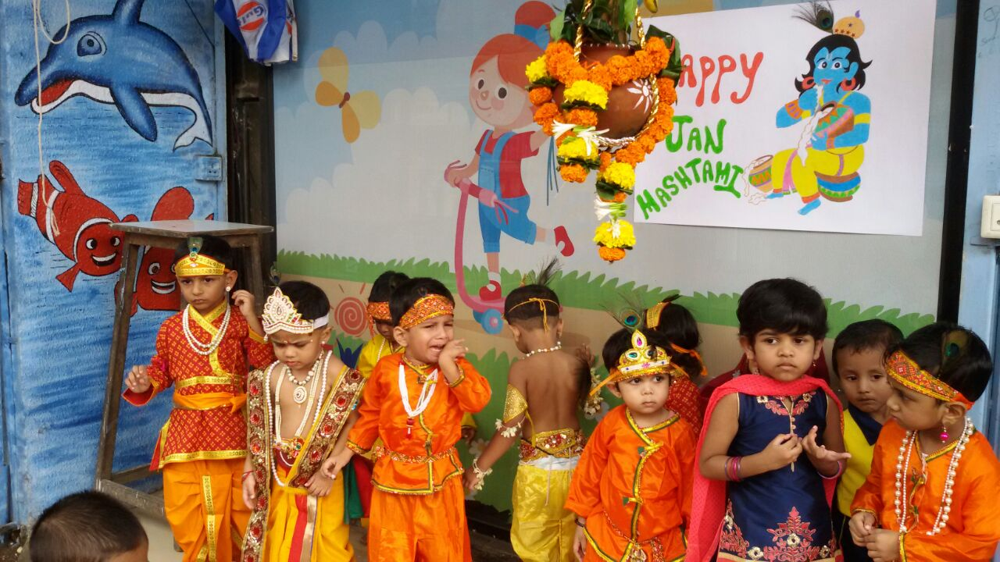

“Ashadhi Ekadashi is an auspicious day of God Shri.Vitthal and is a festival of religious procession which is celebrated during the month of June-July.As per the Marathi calendar, it is Aashadh Shukla Paksha. People consider the two eleventh days, Ekadashi,of every month to be of special significance.And the eleventh day (bright) of Ashadh is known as the Maha (great) Ekadashi. ” LKG / UKG students carry out a Dindi procession on Ashadi Ekadashi. The students wear traditional dresses. Some students play the roles of Vitthal, Rukmini and other saints.
The Dahi Handi festival is popular in the Maharashtra state of India and in Mumbai. It is organized roughly every August. The festival Gokulashtami, known as Krishna Janmashtami in the rest of the country, is the celebration of Krishnas birth and Dahi Handi is part of it. The event involves making a human pyramid and breaking an earthen pot filled with milk, curd, butter, fruits and water which is hung at a convenient height, thus imitating the actions of child Krishna. Sometimes the prize money is added to the pot. This festival of Dahi Handi is also celebrated in our school. Students wear traditional dresses and carry out with Radha – Krishna roles.

Ganesh Chaturthi is celebrated with great devotion all over India and we specially celebrate it in our school for students and all the faculty members. We bring murti (Idol) of Lord Ganesha at our school and celebrate the festival by worshiping the Lord in a special way for 11 days and conducting daily aarti followed by special meals for all 11 days in our dinning hall. On the first day of worship the idol is brought in a colourful and musical procession. We carry out this grand procession for students from class V to IX. Students performing Dhol, Lazim, Zaanz, Dandia.
Diwali, the festival of lights, illuminates the darkness of the New Years moon, and strengthens our close friendships and knowledge, with a self-realization. We conduct Diwali Lantern making programs for our students in the school premises. Our students prepare beautiful Shivaji Raja Forts in school with lamp lighting, giving a touch of combined historic values and decorating it with their creativity. We inspect and guide our students about the safety measures taken about the fireworks. Thus, creating awareness about the importance of the festival, its safety measures, and also the enthusiasm of this colourful festival.
Indian Model School Social Annual Gathering is a wonderful attraction for students, teachers and also for parents. We manage to conduct the program for almost 5 different days for 5 different school students respectively. Lots of efforts are taken by our managing heads, managing committee, teachers, all the helping hands and most importantly our talented students who participate with full enthusiasm. Students from Class L.K.G to Class IX are allowed to participate for the event. We have 22 to 24 events ranging from social plays, historic plays, songs, dances, mimicry and other items. Average participation of 350 - 400 suudents in every individual School Gathering could be noticed.